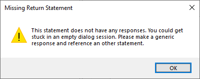

Simple Dialog Conversation
How to setup a simple Conversation
How to Create a Simple Dialog Chain
A Simple Dialog Chain is a series of statements and responses, where the NPC and player can communicate with each other. The purpose of a Simple Dialog Chain is just for information only. The NPC can tell a story or to give general information.
Start off by creating a new NPC. For this example, we'll create John.
1) Type in the name John, and click on the Add New NPC
After you enter John's name, and click on Add New NPC, a new NPC is added to the box below, and an initial default greeting is generated.
When you talk to John in game, he will say "Hello there".
2) Change John's default greeting by click inside the NPC Says... box, and typing in your new message.
Note: If you click on Save Conversation, a dialog box comes up, warning you that you have not set up any Responses.

3) Entering a Response: Giving an answer back to the NPC.
A Response is what the player can say to the NPC to continue or end the dialog conversation. To add a new response, click on Add New Response. This displays a new Add New Response section.
What would you like to say to the NPC? : This is what will be displayed on the screen for the player to click on
Link To Existing Statement / Create New Statement: This is either links to an existing statement, or allows you to create a new statement that will further the conversation chain. When the player clicks on the Response, this statement will be displayed.
In the What would you like to say to the NPC?, enter in something you want to say to the NPC.
Click on Create New Statement, and enter in something that the NPC will say in response to your response.
Click on the Add button.
A new statement appears under NPC John's name, the NPC Says... is updated, and a new response is added to You Can Say...
4) Double click on the Response you just added, How do I know you aren't the undead?. This will take you to the new statement you had entered.
Note: Without any possible response in You Can Say..., the player is stuck at an empty dialog window in-game.
Click on Add New Response, and enter in a new Response, and then Link to Existing Statement to the initial start conversation.
Click on the Save button.
A new Response is added to the Statement. Clicking on the new Response will take you back to the starting conversation.
You may continue to Add New Response entries for each Statement, adding more Statements as you go. Multiple Responses can be added to a Statement. You may use the Green Arrows to move the selected Response up and down in the order that it's to be displayed.
Created with the Personal Edition of HelpNDoc: Free help authoring environment